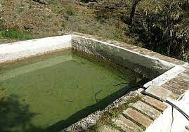
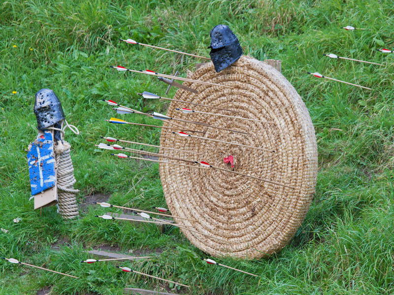
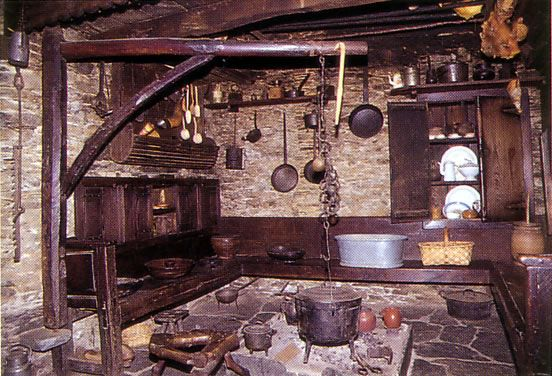
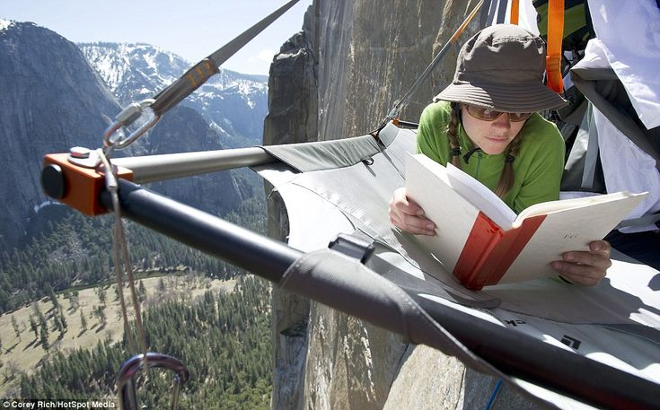
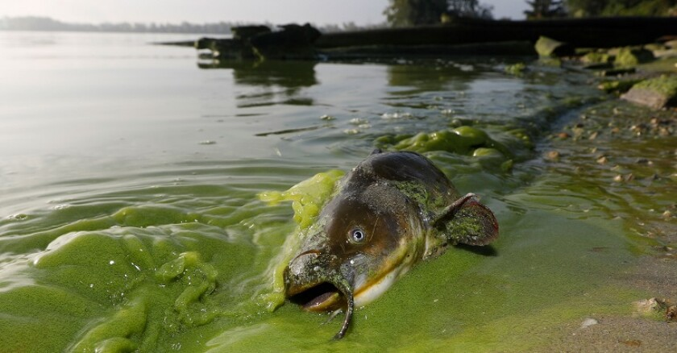
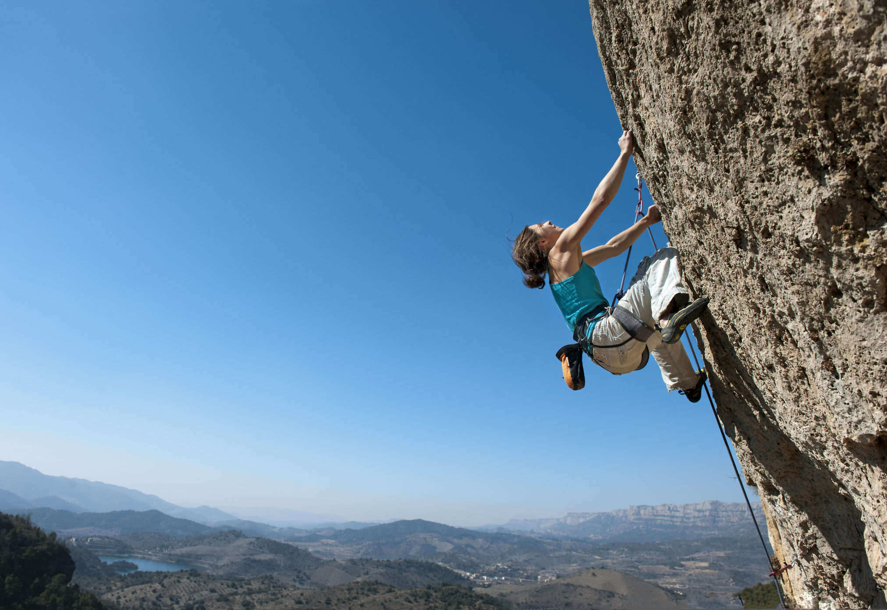
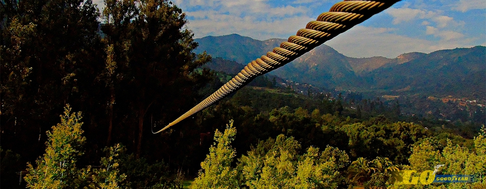

No contamos con la mejor alberca del estado pero lleva en funcionamiento desde comienzo de siglo, ideal para un bañito nocturno o quitarte esas molestas garrapatas que tanto molestan.
 Horario de apertura, todo el día, si eres atrevido...
Cuando fundamos la colonia las dianas ya venia incluida con un set de atrezzo medieval de tiro con arco así que si eres un bravo arquero como Robin Hood ven y prueba suerte, no nos responsabilizamos de las ardillas caidas en el proceso.
 Actividad bajo demanda si quiere reservar llame a nuestro telefono "911911911."
¡Si tienes prisas estas no serán tus cocinas ideales, pero el sabor es atemporal!
 La extracción de madera para los fogones es una actividad tambien incluida en el paquete, ¡Toda una experiencia!
¡Los dormitorios mas comodos a 3.000 pies de alturas que encontraras! Si eres de los que se mueven mucho, mejor atate en corto. Experiencia inolvidable.
 Prohibido lanzar objetos u otros enseres por el borde de la cama, disponemos de literas para los mas atrevidos.
Considerado el lago mas verde y radioactivo del pais cuenta con su propia fauna y flora local, extra de ojos incluidos. Los baños al atardecer de verde uranio es una de las experiencias mas romanticas que tendreis este verano.
 Advertencia: Bañarse no da superpoderes, ni historia de redención si eres un super villano.
La zona de escalada es un "must to do" cuando llegas el primer día, la necesitaras para llegar a tu dormitorio. Entrenamos a manos desnudas para sentir la calidez de la roca.
 ¡Riesgos nulos a menos que quieras darte prisa para ser el primero en cenar!
Nuestra tirolina esta creada con fibra de vidrio de alto carbono, una de las actividades mas populares y divertidas y con mas demanda de todo el campamento
 Recomendamos encarecidamente uso de guantes, a no ser que quieras borrar tus huellas dactilares.
 Campamento Guerreros del Metal
Campamento Guerreros del Metal